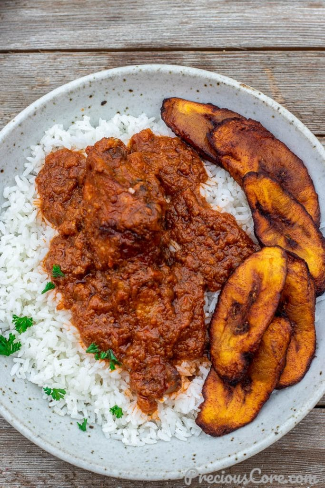

Rice & Stew

Description
Nigerian Chicken Stew is made with tomatoes that are cooked down until the taste is mellow. It is so flavorful and perfect served over hot fluffy rice!
Ingredients
- Chicken
- Tomatoes
- Oil
- Onions
- Herbs
- Garlic and ginger
- White pepper.
- Maggi seasoning cubes
- Salt
- Curry powder
- Tomato paste
Steps
- Chopped the peeled ginger root and place it in a blender. Rinse and chop the basil, parsley, and celery and add them to the blender. Add the garlic cloves and ⅓ of the chopped onion to the blender. Add a little water to help the blender then blend everything into a smooth paste.
- If using a whole chicken, rinse thoroughly then wipe with paper towels. Cut the chicken into desired pieces and place it in a pot.
- To the chicken, add the salt, 2 Maggi cubes or 2 teaspoons of chicken bouillon powder, a quarter teaspoon of white pepper and half of the seasoning blend. Add enough water to be at the same level as the chicken. Use a wooden spoon to mix everything together so all the ingredients get evenly distributed.
- Set the chicken on high heat. Cover and bring to a boil. Once it starts to boil, reduce the heat down to medium and let it simmer until chicken is fully cooked. It takes about 30 to 45 minutes depending on the hardness of the chicken.
- Using a slotted spoon remove the chicken from the stock and place on a baking sheet lined with a rack. Reserve the chicken stock.
- Set oven to high broil. Place the chicken in the oven to broil on one side for about 8 minutes. Then remove the chicken, flip to the other side and let it broil for about 5 minutes.
- Rinse the tomatoes, cut them in chunks and place them in a blender with another ⅓ of the chopped onion. Blend into a paste (no need to add water before blending),
- Pour the one cup of oil into a large pot and let it heat up on high heat for about 3 minutes.
- Add the remaining onion to the oil and quickly stir. Let it saute for about 1-2 minutes.
- Add the tomato-onion blend to the oil and let it cook for about 10 minutes -20 minutes while you stir from time to time to prevent burning. Let it cook until the tomatoes significantly dehydrate and it's mostly just the tomatoes and oil left in the pot.
- Add the tomato paste to the pot and let it cook while stirring continuously until the tomatoes completely dehydrate and there is just tomato and oil in the pot.
- Add the remaining half of the green seasoning blend to the pot and stir so the flavors can bloom. Let it cook while you stir from time to time for 2-3 minutes.
- Add in the reserved chicken stock, the curry powder, the remaining Maggi cube or 1 more teaspoon of chicken bouillon powder. Also add half to one cup of water depending on your preferred level of thickness. Stir everything to combine. Add the broiled chicken to the pot and stir to combine. Let everything simmer for 5 minutes so the chicken can marry the flavors in the stew. Turn off the heat and your African Chicken Stew is done!
- Serve stew warm over hot fluffy rice with a side of sweet fried plantains if you like. Store stew in an airtight container in the fridge for up to 5 days or on the freezer for up to a month.